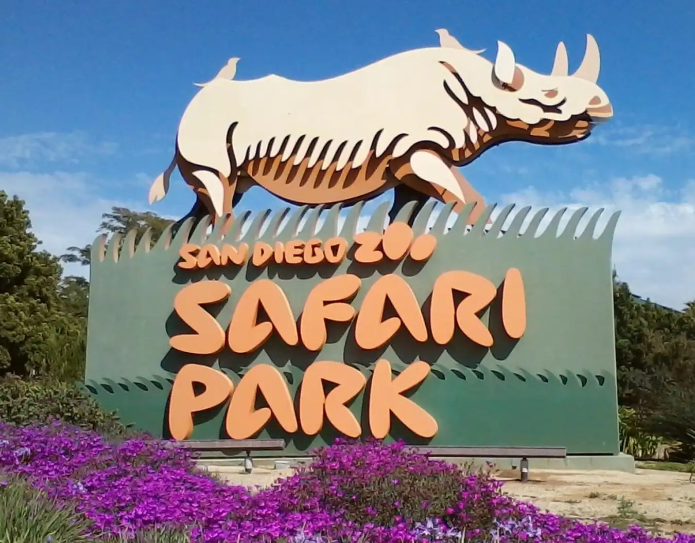

SAN DIEGO PARK

Taman Safari Kebun Binatang San Diego adalah kebun binatang di kawasan Lembah San Pasqual di San Diego, California, dekat Escondido. Taman ini menampung lebih dari 3.000 hewan yang mewakili lebih dari 300 spesies. Ini juga mencakup kebun raya dengan lebih dari satu juta tanaman yang mewakili lebih dari 3.700 spesies.
About me

"The San Diego Zoo Safari Park is an expansive non-profit wildlife sanctuary that is home to more than 3,000 animals representing more than 300 species. Its renowned botanical collection represents 3,500 species and 1.75 million specimens. Over half of the Park’s 1,800 acres (730 hectares) have been set aside as protected native species habitat. It is located 30 miles (48 kilometers) north of downtown San Diego in the San Pasqual Valley near Escondido, California."
Peta terperinci dari Taman Safari Kebun Binatang San Diego
Semua spesies kijang memiliki tanduk. Pada beberapa spesies mereka hanya ditemukan pada jantan; di tempat lain, baik pria maupun wanita memilikinya.
Gorila adalah yang terbesar dari semua primata, hewan yang meliputi monyet, lemur, orangutan, simpanse, dan manusia.